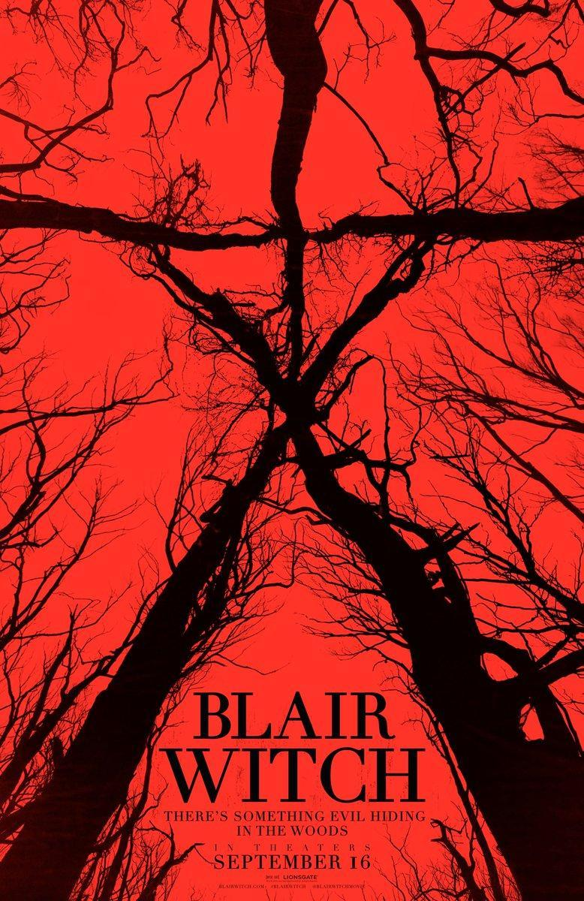

Blair Witch
Blair Witch es una saga que actualmente cuenta con 5 películas
Unos jóvenes investigan la desaparición de la hermana de uno de ellos, de quien se perdió el rastro en 1994 en un bosque vinculado a la leyenda de la bruja de Blair. Cuando llegan al lugar, conocen a un grupo de personas que se ofrecen a guiarlos, pero pronto sienten que una oscura presencia los acecha.
2016 - 1hs 29min
¿Dónde Ver?
Actualmente, esta película está disponible en las plataformas: